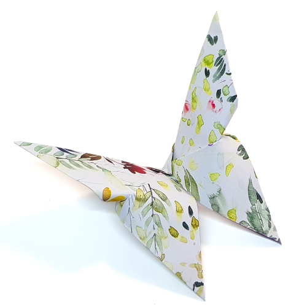

Paper Heart

Paper Lily

Paper Basketchick

Paper 3D Butterfly
Origami for elders focuses on detailed, meaningful, and mindful paper designs that encourage patience, concentration, and creativity. These models often involve advanced folding techniques that provide mental stimulation and relaxation, making origami a calming and rewarding activity. Through these designs, elders can enjoy artistic expression while enhancing focus, precision, and a sense of accomplishment.
Paper Heart
Paper Lily
Paper Basketchick
Paper 3D Butterfly